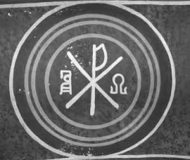

Am mai spus-o în aceste pagini, dar se cuvine zis iarăși și iarăși: libertatea și adevărul nu sînt realități sociologice sau politice, nici abstracții filosofice. Sînt realități teologice, dumnezeiești. Căci Dumnezeul Treimic a zis (și a făcut): „Să facem om după chipul și asemănarea Noastră!” – adică liber și rațional, după Sfinții Părinți. Altfel spus, libertatea, adică voința proprie, este o însușire dumnezeiască a omului dată dintru început; ea nu trebuie căutată și dobîndită prin osteneală proprie, ci doar folosită în scopul cel bun, adică întru ascultarea lui Dumnezeu, Care e însăși libertatea. Zice Sfîntul Grigorie de Nissa:
„Acela care l-a făcut pe om spre a fi părtaș al bunătăților Sale și care i-a sădit în fire rîvna spre cele bune, pentru ca dorința lui să fie îndreptată mereu către Făcătorul său, nu l-ar fi putut lipsi pe om de cel mai frumos și mai de preț bun, adică de darul libertății. Căci, dacă asupra vieții omenești ar fi stat vreo silnicie, s-ar fi schimonosit chipul omului în acea parte, înstrăinîndu-se de Întîiul Chip [prototipul] după Care a fost făcut, din pricina neasemănării acelei părți a omului cu Întîiul Chip. Într-adevăr, o fire supusă unor silnicii cum ar mai putea fi numită «chipul» Celui care împărățește? Ei bine, ființa care se aseamănă în toate privințele cu Dumnezeu trebuia să aibă neapărat în firea sa voința neatîrnată și pe deplin liberă, pentru ca împărtășirea la bunurile dumnezeiești să-i fie ca răsplată a faptei sale celei bune.” Și arată același Sfînt Părinte că, într-adevăr, „trupul este [ar trebui să fie, după cum s-a și zidit] rob al sufletului. Dar sufletul, prin puterea cugetului, se mișcă liber în toată zidirea, ridicîndu-se pînă la ceruri și coborîndu-se în adîncuri, străbătînd întinderea pămîntului și pătrunzînd sub acesta, cîteodată ajungînd cu mintea pînă și în jurul minunilor cerești, fără să fie deloc îngreunat de povara trupului.”
Strămoșul Adam s-a folosit însă rău de libertatea sa (chiar aceasta fiind o dovadă că el a fost zidit liber, căci „răul se naște în lăuntrul omului la libera lui alegere, luînd ființă atunci cînd sufletul se îndepărtează de bine”, precum zice același Sfînt Grigorie de Nissa). Astfel, Adam (și, odată cu el, omul ca fire) și-a pierdut libertatea firească, ieșind de sub ascultarea Făcătorului său și făcîndu-se de bună voie rob al Satanei. Cum s-a întîmplat aceasta, arată cel mai bine Sfîntul Grigorie Teologul:
„Pe viețuitorul acesta [pe om], Dumnezeu l-a pus în Rai (oricare a fost Raiul cîndva), cinstindu-l cu voință liberă, ca binele să fie nu mai puțin al celui ce îl alege (al omului) decît al Celui ce a dat semințele [binelui] (al lui Dumnezeu); lucrător de pomi nemuritori: poate de gîndiri dumnezeiești, fie mai simple și mai de jos, fie mai desăvîrșite și mai înalte; gol cu simplitatea, și cu nevicleșugul, și cu viața cea fără de meșteșug (care nu avea trebuință de meșteșuguri) și fără de tot acoperămîntul și apărarea; căci astfel trebuia să fie cel ce s-a zidit dintru început. Și îi dă lui o lege, ca o materie și pricină a stăpînirii de sine [a voinței sale libere]: iar legea era porunca din care pomi (adică gîndiri dumnezeiești) trebuia el să se împărtășească și de care să nu se atingă. Iar acesta era «pomul cunoștinței», care nu s-a sădit rău întru sine [de vreme ce Dumnezeu nu a făcut nimic rău]. Ci pomul era bun dacă omul s-ar fi împărtășit de el în bună vreme. Căci pomul era privire (adică gîndire) înaltă – după socoteala mea – la care le este fără primejdie a se sui celor ce sînt mai desăvîrșiți cu deprinderea [cu «experiența», iar Adam abia fusese zidit], dar nu era bun celor ce încă sînt mai simpli și mai lacomi cu pofta, așa cum nici hrana cea desăvîrșită nu este folositoare celor ce încă sînt cruzi și au încă trebuință de lapte.”

Prin urmare, omul și-a pierdut libertatea din clipa în care Adam și-a urmat voia lui cea rea, cînd a călcat singura poruncă dată lui de Dumnezeu. Și atunci a căzut în robia Satanei, a vrăjmașului lui Dumnezeu și al oamenilor, și în robia acestei vieți muritoare. Iar el singur nu se mai putea răscumpăra, căci nici un rob nu se poate răscumpăra singur pe sine. Încît a fost nevoie ca Însăși una din Persoanele Dumnezeirii, Dumnezeu-Cuvîntul, să Se întrupeze și să răscumpere firea omenească din robia celui rău prin firea Lui omenească cea lipsită de păcatul strămoșesc și prin moartea Lui cea necuvenită și nedreaptă (căci moartea e urmarea păcatului).
Și aici ne oprim puțin, pentru a desluși o nedumerire. Căci oamenii se întreabă: De ce sîntem vinovați de păcatul strămoșului, de vreme ce nu noi l-am făcut? Și trebuie să înțelegem că Făcătorul nostru a suflat duh de viață întru Adam, iar acest duh dumnezeiesc a trecut întru tot neamul omenesc din generație în generație. Cum zice Pavel, toți am păcătuit întru Adam, pentru că în el s-a cuprins dintru început întreaga fire omenească. La fel, prin Noul Adam Hristos, Care nu S-a născut din împreunare bărbătească, toată firea omenească a fost zidită din nou și răscumpărată de păcatul strămoșului. Iar nouă ne-a rămas doar să ne liberăm de păcatele proprii, de voia noastră cea rea, aceasta fiind lucrarea vieții creștine.
A fost greu însă ca oamenii, prinși vreme de 5508 ani în minciuna Satanei și ținuți de păcatul strămoșesc și de patimile proprii, să mai înțeleagă nevoia acestei răscumpărări și nevoia unui Răscumpărător, atunci cînd Acela S-a întrupat. Păgînii nici nu visau la așa ceva, iar Iudeii așteptau (ca și acum) un mîntuitor pămîntesc, de fapt pe Antihrist. De aceea „zicea Iisus către Iudeii care crezuseră în El: Dacă veți rămîne în cuvîntul Meu, sînteți cu adevărat ucenici ai Mei și veți cunoaște adevărul, iar adevărul vă va face liberi [de păcat]” (Ioan 8:31, 32). Stihuri care se înțeleg așa, după Sfințitul Teofilact al Bulgariei:
„Iar auzind că «mulți au crezut», să înțelegi că aceștia au crezut așa prost și cum s-a întîmplat; nu cum se cădea, ci ca și cum le-a plăcut și s-au odihnit pentru smerenia cuvintelor [lui Iisus]. Iar că nu erau credincioși adevărați este arătat din ce grăia către ei: «Dacă veți petrece întru cuvîntul Meu…» Căci ne dă să înțelegem că ei au crezut, însă pe deasupra, și pentru aceasta nici nu petreceau în credință. Și, văzîndu-i pe ei că erau în acest fel, arată că știe inimile lor și că Dumnezeu este. […]
Deci zice: Dar – dacă Mă veți cunoaște pe Mine, Care sînt Adevărul – Adevărul (adică Eu) vă va slobozi pe voi de păcate cu adevărat. Căci cel ce crede întru Cel ce ridică păcatul lumii s-a izbăvit cu adevărat de păcate. Deci – precum celor ce n-au crezut le-a zis că: «În păcatele voastre veți muri!» – tot așa celor ce petrec în credință le făgăduiește slobozire de păcate [prin Sfintele Taine ale Bisericii Sale].”
Se întîmplă însă că, de două mii de ani, Iudeii cei necredincioși și toți necredincioșii propovăduiesc fățiș că libertatea se dobîndește tocmai prin săvîrșirea păcatului, adică prin săvîrșirea nestingherită a patimilor trupești și sufletești, între care cea mai înfricoșătoare e însăși necredința! Și ei strigă: Fraților! Libertate, egalitate și fraternitate împotriva lui Hristos! Căci acest îndemn la răzvrătire împotriva Dumnezeu-Cuvîntului întrupat, propovăduit fățiș de revoluția „Iluminaților” și „Luciferienilor” de acum 300 de ani, e îndemnul puțin schimbat al Satanei de acum 7518 ani: Oamenilor, nu-L ascultați pe Dumnezeu, căci El vrea să vă țină robi și neștiutori!
Iar revoluția este biruitoare azi în toată lumea: și în aceea lipsită de darul botezului, și în aceea botezată. Omul s-a liberat desăvîrșit de sub stăpînirea Ziditorului și Dumnezeului a toate, adică e liber să robească nestingherit Satanei și propriilor patimi. Să ne gîndim, de pildă, că acum sîntem liberi (e chiar bine, drept, cusher) să propovăduim sodomia în priveliștea întregii lumi, dar nu mai sîntem liberi să o împiedicăm, fiindcă am călca dreptul omului de a-și pierde cu totul sufletul, de a se înrobi diavolului celui mare și în această viață, și în cea viitoare.
Cu alte cuvinte, niciodată nu am fost mai puțin liberi decît acum. Mulți văd limpede și vorbesc deschis de aceasta. Iată îngrijorarea (rece, de altfel, anemică și formală) stîrnită de așa-zisele „micro-cipuri”, de această stăpînire desăvîrșită a Statului „liberal” și „democratic” asupra tuturor, încă de la nașterea fiecărui mic cetățean. Este un fapt înfricoșător, cu adevărat! Nimeni nu spune însă că s-a ajuns aici fiindcă omul dorește a fi liber întru patimile sale și de fapt primește orice lanț, orice îngrădire, numai pentru a dobîndi această libertate a robiei. (Știm că, după „9-11 septembrie”, Americanii au fost întrebați ce vor: siguranță sau dreptul la intimitate? Au ales siguranța.)
Deci nu stăpînirea lumească ne stăpînește de fapt. Noi nu sîntem liberi pentru că nu înțelegem scopul acestei vieți: acela de a ne libera de păcat și deci de diavolul. Botezul – adică moartea și învierea Mîntuitorului, pe care le încercăm prin cele trei cufundări în apa sfințită – ne-a scăpat de păcatul strămoșului Adam. Urmează ca noi să ne liberăm de ale noastre patimi, dacă vrem, cum am zis și cum zice același Sfințit Teofilact:
„Hristos ne-a slobozit desăvîrșit din păcate pe noi, cei ce ne sfințim și ne ungem cu sîngele Lui prin botezul ce se face întru moartea Lui. Căci – după însuși Pavel – toți Creștinii care se botează «se fac împreună sădiți cu asemănarea morții lui Hristos» (Romani 6:3).”
Iar altundeva, Pavel zice așa:
„Din El [din Dumnezeu-Tatăl] sînteți voi, întru Hristos Iisus, Care S-a făcut nouă înțelepciune de la Dumnezeu, și dreptate, și sfințenie și izbăvire [liberare]” (1 Corinteni 1:30). Loc care se înțelege așa, tot după Teofilact:
„Pavel zice: Iisus Hristos, Cel prin Care ne-am făcut fii ai lui Dumnezeu, ca unul ce este înțelepciune, ne-a făcut înțelepți; ca sfințenie, ne-a făcut sfinți; ca drept, ne-a făcut drepți; iar ca izbăvire, ne-a făcut slobozi. Și, ne-a făcut înțelepți, de unde mai înainte eram nebuni; ne-a făcut curați, de unde mai înainte eram necurați; ne-a făcut drepți, de unde mai înainte eram păcătoși; și ne-a făcut slobozi, de unde mai înainte eram robi diavolului și păcatului. Și vezi rînduiala – o cititorule! Mai întîi, Hristos ne-a făcut înțelepți, fiindcă ne-a slobozit din rătăcirea slujirii la idoli și ne-a învățat adevărul cunoștinței de Dumnezeu; al doilea, ne-a făcut drepți, fiindcă ne-a dăruit iertarea păcatelor; al treilea, ne-a făcut sfinți, prin Sfîntul Său Duh; și, în cele din urmă, ne-a dăruit deplina slobozenie de toate relele, încît sîntem datori a fi toți cu totul ai singurului Hristos și numai Lui afierosiți [adică închinați]”.
Și tot Pavel zice:
„Toate îmi sînt slobode, dar nu toate îmi folosesc. Toate îmi sînt slobode, dar nu mă voi lăsa stăpînit de vreuna!” (1 Corinteni 6:12). „Stați așadar întru slobozenia cu care ne-a slobozit Hristos și să nu vă prindeți iarăși în jugul robiei! […] Căci voi v-ați chemat spre slobozenie, fraților, numai să nu dați slobozenia voastră spre prilej trupului” (Galateni 5:1, 13). „El ne-a izbăvit [ne-a liberat] din stăpînirea întunericului și ne-a adus la împărăția Fiului dragostei Sale, întru Care avem izbăvirea și lăsarea păcatelor” (Coloseni 1:13, 14).
Iar Teofilact adaugă la această din urmă zicere:
„Deci Dumnezeu ne-a izbăvit pe noi, care eram jos, în «stăpînirea întunericului», adică a rătăcirii și a tiraniei întunecatului diavol. Căci Apostolul nu a zis că ne-a izbăvit «de întuneric», ci «din stăpînirea întunericului», fiindcă întunecatul diavol avea multă stăpînire și tiranie asupra noastră. Căci rău ar fi fost cu adevărat și doar a ne afla sub diavol, iar a ne afla sub stăpînirea și tirania lui era încă mai rău. Și nu a zis că «ne-a scos», ci că «ne-a slobozit» din stăpînirea diavolului, ca să arate că noi ne aflam luați de el în robie, și cumplit ne ticăloșeam și că apoi Dumnezeu, slobozindu-ne pe noi, cei atît de stăpîniți de întunecatul diavol, ne-a mutat la luminata lumină a împărăției și a teoriei [vederii] Sale.”
Așadar, a fi liber înseamnă a cunoaște adevărul, și a-l propovădui și a-l urma: „Veți cunoaște adevărul, iar adevărul vă va face liberi.” Iar adevărul e Hristos, cum ziceam, „căci – după același Teofilact – lumină [adică adevăr] e Tatăl, lumină e și Fiul, pentru că a luminat sufletele noastre și le-a slobozit din întunericul necunoștinței, arătîndu-L oamenilor pe Tatăl, pentru care și zicea: «Eu sînt lumina lumii!»”
Modelul omului liber este deci Dumnezeu-Cuvîntul întrupat, Dumnezeu-Omul Hristos. Acesta a fost liber fiind fără de păcat și împlinind pînă la capăt voința Dumnezeu-Tatălui, Dumnezeu fiind însăși libertatea. De aceea a și primit să fie prins și legat, deși ar fi putut să scape de ucigașii Săi („Întoarce sabia ta la locul ei [Petre], căci toți cei ce scot sabia de sabie vor pieri! Sau ți se pare că nu pot să-L rog pe Tatăl Meu și să-Mi trimită acum mai mult de douăsprezece legiuni de îngeri?” (Matei 26:52, 53)) Apoi, odată prins, Mîntuitorul a fost liber și la casa arhiereului și în pretoriul lui Pilat, și aceasta se vede din aceea că la o vreme nici nu a mai vorbit cu ei.
Iar cei care L-au urmat pe Hristos, deși în temnițe de multe ori, au fost și ei liberi asemenea Lui. Iată-l pe Pavel, care (de parcă nu-i ajunsese vremea petrecută în închisoare!) a cerut să fie dus la judecata împăratului Nero, deși împăratul Agrippa al Iudeii voia să-l libereze (și vezi la Faptele Apostolilor). Pavel care, întemnițat, vorbea teologie cu temnicerul Festus, iar mai tîrziu (cum citim în Viața lui) filosofa împreună cu însuși Nero (nebunul filosof stoic amator, ucenic al lui Seneca).
Liberi au fost în temnițe și ucenicii de mai tîrziu ai Mîntuitorului, Sfinții Mucenici, dintre care mulți s-au dus de bună voie la închisoare și la moarte (de pildă, Sfîntul Ignatie Teoforul, sau Sfîntul Mare Mucenic Mina). Erau liberi fiindcă erau cu Hristos! Încît duhul lor, biruind neputința trupului, nu putea să fie ținut între ziduri și înlănțuit, ci zbura pînă la cer.
Și tot așa a fost pînă în vremile noastre. Iată de pildă ce scria Vlădica Nicolae Velimirovici al Sîrbilor, pe cînd era întemnițat în lagărul de la Dachau:
„De aceea îl bate Dumnezeu [pe om], ca să nu se piardă; îl dă să fie chinuit de oameni, ca să nu se dea Satanei în veac – pentru a se întoarce la Hristos, la Mărgăritarul lui, la Nestematul lui, cu a Cărui strălucire vedem calea în mijlocul nopții ca și la amiază, în robie ca și în libertate, în nefericire ca și în fericire.”
Deci cel mai liber dintre oameni este acela care a ajuns liber de patimi, precum adevăratul următor al lui Hristos, călugărul, care de cele mai multe ori se închide pe sine în locașuri strîmte: în chilii, în găuri ale pămîntului sau trăiește pe stîlpi. el este liber fiindcă împlinește astfel cuvîntul Mîntuitorului, precum arată Sfîntul Ioan Gură de Aur:
„Cel ce disprețuiește patimile, își bate joc de barbari, pe cînd cel ce cade sub puterea patimilor va suferi rele mai mari decît de la barbari. Barbarul, cînd are putere, chinuie trupul, dar patimile muncesc sufletul și-l rod din toate părțile. Barbarul, cînd are putere, dă trupul morții vremelnice, în timp ce patimile îl dau morții viitoare și veșnice. Încît liber este cel ce are libertatea desăvîrșită asupra patimilor, și rob este cel ce cade sub stăpînirea patimilor dobitocești.”
AXA AFIRMĂ – NU RĂSTĂLMĂCEȘTE ȘI NU ÎȘI ÎNCHIPUIE